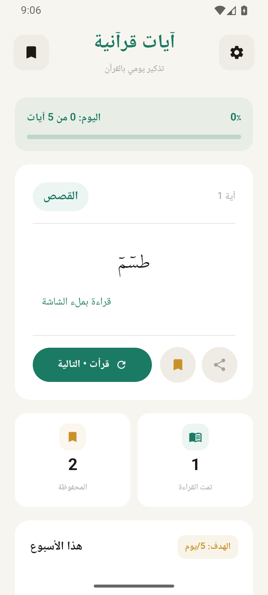

اقرأ بقلبٍ حاضر
قراءة بملء الشاشة، وحجم خط يناسبك، ووضع فاتح أو داكن لراحة عينيك.
مساحة أوسع للتدبّر ↙بين انشغالات الحياة، خذ لحظةً مع كلام الله.
اقرأ، تدبّر، واجعل للقرآن مكانًا في كل يوم.

تجربة بسيطة تترك لك ما هو أهم:
القراءة، والتدبّر، والاستمرار.
قراءة بملء الشاشة، وحجم خط يناسبك، ووضع فاتح أو داكن لراحة عينيك.
مساحة أوسع للتدبّر ↙احفظ الآيات التي تلامس قلبك، ثم عُد إليها بسهولة مع البحث في محفوظاتك.
لآياتٍ نحب أن نعود إليها ↙اختر عدد تذكيراتك وأوقاتها، وتابع هدفك اليومي بخطوات صغيرة تناسب يومك.
عادات صغيرة، صلة دائمة ↙كل شاشة صُمّمت لتمنح آياتك المساحة التي تستحقها.
وَلَقَدْ يَسَّرْنَا الْقُرْآنَ لِلذِّكْرِ
فَهَلْ مِن مُّدَّكِرٍ
إجابات قصيرة، لبداية مطمئنة.
لا. نص القرآن والقراءة والمحفوظات متاحة دون اتصال بالإنترنت بعد تثبيت التطبيق.
اسمح بالإشعارات والمنبّهات الدقيقة، وأزل قيود البطارية والعمل في الخلفية. يرشدك التطبيق إلى إعدادات التشغيل المتاحة على هاتفك. إذا أوقفت التطبيق إجباريًا، افتحه مجددًا لاستئناف التذكيرات.
يعمل على هواتف أندرويد بالإصدار 8.0 فأحدث. تختلف خيارات التشغيل التلقائي والبطارية حسب الهاتف وإصدار النظام.
الإصدار 1.1.0 يستخدم مفتاح توقيع إنتاج جديدًا. إذا كانت النسخة التجريبية القديمة مثبتة، ستحتاج إلى إزالتها أولًا. إزالة التطبيق تحذف محفوظاته وتقدّم القراءة وإعداداته المحلية.
حمّل آيات، وامنح يومك لحظة تستحقها.
تحميل التطبيق مجانًا إرشادات التثبيت والتذكيرات ↗